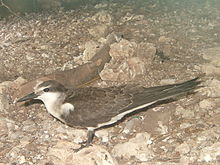
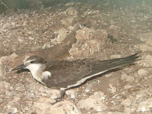

| Bridled Tern | |
|---|---|
|  | |
| Juvenile, Lady Elliot Island, Australia | |
| Conservation status | |
| Binomial name | |
| Onychoprion anaethetus (Scopoli, 1786) |
|
| Synonyms | |
|
Sterna anaethetus Scopoli, 1786 |
| Bridled Tern | |
|---|---|
|  | |
| Juvenile, Lady Elliot Island, Australia | |
| Conservation status | |
| Binomial name | |
| Onychoprion anaethetus (Scopoli, 1786) |
|
| Synonyms | |
|
Sterna anaethetus Scopoli, 1786 |
The Bridled Tern (Onychoprion anaethetus, formerly Sterna anaethetus - see Bridge et al., 2005) is a seabird of the tern family Sternidae. It is a bird of the tropical oceans. The Atlantic subspecies melanopters breeds in Mexico, the Caribbean and west Africa; other races occur around the Arabia and in Southeast Asia and Australasia, but the exact number of valid subspecies is disputed.
This bird is migratory and dispersive, wintering more widely through the tropical oceans. It has markedly marine habits compared to most terns. This species is a rare vagrant to western Europe.
This species breeds in colonies on rocky islands. It nests in a ground scrape or hole and lays one egg. It feeds by plunge-diving for fish in marine environments, but will also pick from the surface like the Black Tern and the Gull-billed Tern. It usually dives directly, and not from the "stepped-hover" favoured by the Arctic Tern. The offering of fish by the male to the female is part of the courtship display.
This is a medium-sized tern, at 30–32 cm in length and with a 77–81 cm wingspan similar to the Common Tern in size, but more heavily built. The wings and deeply forked tail are long, and it has dark grey upperparts and white underparts. The forehead and eyebrows are white, as is a striking collar on the hindneck. It has black legs and bill. Juvenile Bridled Terns are scaly grey above and pale below.
This species is unlikely to be confused with any tern apart from the similarly dark-backed Sooty Tern and the Grey-backed Tern from the Tropical Pacific. It is paler-backed than that Sooty, (but not as pale as the Grey-backed) and has a narrower white forehead and a pale neck collar.

{kind=link}